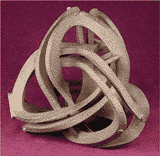

Solda ve aþaðýda,
ABD'nde, Michael
Rees isimli
bir sanatçýnýn
bilgisayarla modelleyip otoinþa
teknolojisi ile
imal ettiði iki eseri görülmektedir.
Aþaðýdaki eser
direkt olarak bir SLA
sistemiyle inþa edilmiþtir.
|
|
Saðda,
Hollanda'nýn yeni prensesi Maxima'nýn düðününde kullanacaðý
taçý belirlemek üzere açýlan bir tasarým yarýþmasý için
Marcel Wanders isimli Hollanda tabanlý tasarým bürosu
tarafýndan tasarlanmýþ model görülmektedir. Ocak 2002'de
Belçika tabanlý hýzlý prototip servis bürosu Materialise
tarafýndan SLA ile üretilen bu taç, suya düþen bir damlanýn
oluþturduðu dalgalanmalarý temsil etmektedir. Bu taçýn
hassas döküm ile gümüþ malzemeden bir kopyasý da üretilmiþtir.
|
|
|
|
|
Yukarýda,
Z
Corp. firmasýnýn cihazlarýyla renkli olarak
inþa edilmiþ modeller görülmektedir. Resimleri
büyük görmek için üzerlerini klikleyiniz.
|
|
Saðda,
Extrude Hone / ProMetal
3DP teknolojisi ile inþa edilmiþ çok karmaþýk
geometriye sahip metal bir parça görülmektedir.
Deneme
amaçlý üretilmiþ bu model aslýnda sistemin promosyon
ve sanat uygulamalarý konusundaki potansiyelini
de göstermektedir.
|
|
|
ABD'nde Bathsheba
Grossman isimli sanatçýnýn "Dijital Heykel" ismini
verdiði eserlerinden bir örnek:
|
|
|

|
|
CAD görüntüsü
|
Z Corp. firmasýnýn
otoinþa cihazýyla imal edilmiþ model
|
Hassas
döküm ile elde edilmiþ bronz heykel.
|
|
Soldaki
iki resim: 1989 yýlýnda 3D
Systems firmasý tarafýndan yapýlan bir yarýþmada
derece almýþ olan bir çalýþma (Kurt Kaufmann). Tasarým
Alias ile yapýlmýþ ve SLA-1 ile inþa edilmiþtir.
Saðda: "Organizasyon, Hiyerarþi ve Baðýmsýzlýk" konulu
bu eser, Israel Hadany tarafýndan tasarlanmýþ ve Cubital
firmasýnýn Solider 5600 cihazý kullanýlarak inþa edilmiþtir.
|
 Materialise,
1,86m boyundaki Yunan Kouros heykelinin bir replikasýný
2002 yýlý içinde tek parça halinde inþa edilmiþtir. Bu
çalýþma heykellerin çoðaltýlmasý amacýyla kullanýlabilecek
farklý metodlarýn araþtýrýldýðý ECO-marble projesi kapsamýnda
yapýlmýþtýr. Bu heykel 0.15mm katman kalýnlýklarýyla 99
saat 22 dakikada inþa edilmiþtir. 5mm et kalýnlýðýna sahip
olarak içi boþ inþa edilen bu heykel için toplam 10 litre
(6 kg) fotopolimer reçine harcanmýþtýr. Bu
iþ için Dünya'nýn en büyük kapasiteli otoinþa cihazlarýndan
biri olan Mammoth II modeli stereolitografi
cihazýný kullanýlmýþtýr. Materialise,
1,86m boyundaki Yunan Kouros heykelinin bir replikasýný
2002 yýlý içinde tek parça halinde inþa edilmiþtir. Bu
çalýþma heykellerin çoðaltýlmasý amacýyla kullanýlabilecek
farklý metodlarýn araþtýrýldýðý ECO-marble projesi kapsamýnda
yapýlmýþtýr. Bu heykel 0.15mm katman kalýnlýklarýyla 99
saat 22 dakikada inþa edilmiþtir. 5mm et kalýnlýðýna sahip
olarak içi boþ inþa edilen bu heykel için toplam 10 litre
(6 kg) fotopolimer reçine harcanmýþtýr. Bu
iþ için Dünya'nýn en büyük kapasiteli otoinþa cihazlarýndan
biri olan Mammoth II modeli stereolitografi
cihazýný kullanýlmýþtýr.
|
|
Aþaðýda,
Fransýz sanatçý Christian LAVIGNE'nin 3D CAD ile tasarladýðý
ve SLS cihazlarý
ile polyamid malzemeden inþa ettiði orijinal eserler
görülmektedir. Sipariþ üzerine çoðaltýlan bu eserler
5000 Euro fiyattan satýþa çýkartýlmýþtýr:
|
|
|
|
Ýsim:
LES DIEUX SONT PIPÉS
Ölçüler: 22 x 22 x 44cm
Yapým tarihi: 2002
|
Ýsim:
LE NOMBRE D'OR
Ölçüler:
9 x 16 x 50cm
Yapým tarihi: 2001
|
Daha
fazla bilgi için: www.impression3d.com/cybersculpteurs.htm
|
|
|
|
Solda, Matematik
ile sanatýn kesiþtiði bir eser: Fermat'ýn son teoreminde
n=3 olduðunda ortaya çýkan üç boyutlu yüzey (Steward
Dickson, SLA-250
ile inþa edilmiþtir).
Saðda,
3D
Systems SLA sistemleriyle inþa edilmiþ karmaþýk
bu diþli mekanizmasý, otoinþa teknolojisinin kabiliyetini
göstermesi yanýnda sanat deðeri de taþýmaktadýr.
|
Saðda, 3D
Systems SLA sistemleriyle tek parça halinde inþa edilmiþ,
birbirine geçmiþ zincirler ve küp içinde bir dünya küresi
görülmektedir. |
|
Saðda, 3D
Systems SLS sistemleriyle polyamid malzemeden tek
seferde inþa edilmiþ, birbiri içine geçen 3 parçadan
oluþan eserler görülmektedir.
|